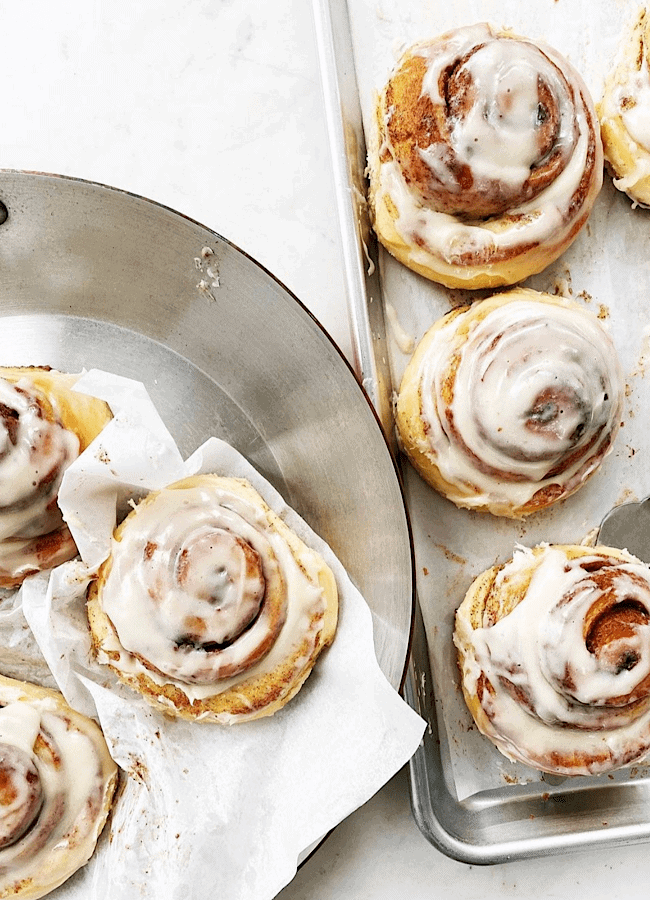

Cinnamon Rolls

Perfectly baked homemade cinnamon rolls with a melted cream cheese
frosting.
This recipe for homemade cinnamon rolls produces perfect pillowy soft
cinnamon buns consistently. This recipe has a rise time of 2 hours and
a total of 4 foldings (video guidance below!). Allowing the dough to
rest overnight in the fridge yields the best results and makes this recipe
convenient for a morning bake! These cinnamon rolls are 100% worth the effort.
The cinnamon rolls will emerge from the oven gooey, pillowy soft and perfect.
Dough
- 4 large eggs room temperature
- 3/4 cup whole milk warm
- 1/4 cup honey
- 4 cups all-purpose flour
- 2 1/4 teaspoons instant yeast
- 2 teaspoons salt
- 10 tablespoons 1 1/4 sticks unsalted butter, room temperature, cut into 1-inch pieces
Filling
- 1/2 cup packed brown sugar (99g)
- 1 tablespoon ground cinnamon
- Pinch salt
- 2 tablespoons unsalted butter, melted and cooled (29g)
Frosting
- 8 tablespoons 1 stick unsalted butter, room temperature (113g)
- 4 ounces cream cheese, room temperature (114g)
- teaspoon pure vanilla extract
- 1/4 teaspoon salt
- 1 cup confectioners' sugar
Steps
- Grease a large bowl.
- In a large liquid measuring cup, combine the eggs, milk, and honey.
- In the bowl of a stand mixer fitted with a paddle, mix the flour, yeast, and salt and
stir on low to combine. Add the egg mixture and mix on low to combine. With the mixer on
low, add the butter, one piece at a time. When all the butter has been added, increase the
speed to medium and beat the butter into the dough, until all the little butter pieces are
incorporated, 1 minute. Transfer the dough to the prepared bowl. The dough will be very
sticky and you will need a spatula to scrape the dough into the bowl.
- Cover the bowl with plastic wrap and let rise for 30 minutes. Place your fingers or a
spatula underneath the dough and gently pull the dough up and fold it back over itself.
Turn the bowl and repeat this folding again. Continue 6 to 8 more times, until all the
dough has been folded over on itself. Re-cover the bowl with plastic and let rise for 30
minutes. Repeat this series of folding 3 more times, for a rise time of 2 hours and a total
of 4 foldings (see the GIF above on how to do this folding). Tightly cover the bowl with plastic
wrap and refrigerate overnight or up to 72 hours.